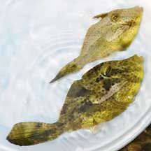

|
|
| fishes text index | photo index |
| Phylum Chordata > Subphylum Vertebrate > fishes > Family Monacanthidae |
| Strapweed
filefish Pseudomonacanthus macrurus* Family Monacanthidae updated Sep 2020 Where seen? This filefish is sometimes seen on some of Southern shores among seagrasses and among seaweeds on the coral rubble. It is also called the Smallspotted leatherjacket. Features: To 24cm, those seen about 10cm. Body with lots of small circular dots and often a broad white stripe or blotch along the centre of the body from the gill opening. May have dark blotches. More on how to tell apart filefishes. |
 Cyrene Reef, May 08 |
 Pulau Hantu, Jul 08 |
*Identification needs confirmation. Species are difficult to positively identify without close examination.
On this website, they are grouped by external features for convenience of display.
| Strapweed filefishes on Singapore shores |
On wildsingapore
flickr
|
| Other sightings on Singapore shores |
Links
References
|